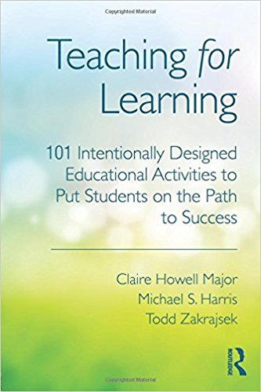

Teaching for Learning

Teaching for Learning: 101 Intentionally Designed Educational Activities to Put Students on the Path to Success is the book I’ve been looking for ever since I first read The Discussion Book. As its subtitle says, it’s a catalog of a hundred different evidence-based IDEAs (which stands for Intentionally Designed Educational Activities, and yes, I do wonder how long it took the authors to come up with that acronym). Suggestions are grouped by overall teaching strategy–lecture, discussion and so on–and each description includes an overview, guiding principles, preparation, process, suggestions for related IDEAs, and a few tips. There are copious references to primary and secondary literature, and the writing is crisp and jargon-free without ever soft-pedalling its subject’s complexity. If you’re serious about teaching and looking for something to read over the holidays, I can’t think of a better investment. (And if you’d like something shorter, checkout Kalid Azad’s description of his ADEPT approach to lesson design.)